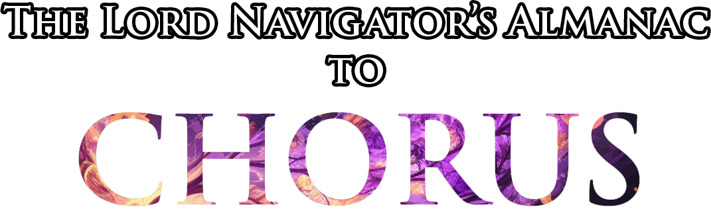
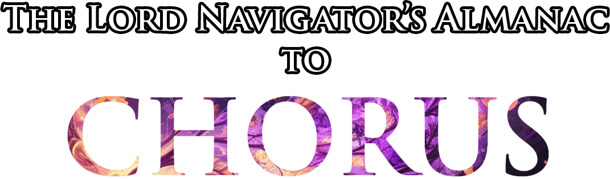

THE FLOW OF SPACE
We exist in the space between.


 

NEW MAGIC SCHOOL:
TEMPOMANCY
Tempomancy, or the magic of the control over time, came into existence when the god of time was felled during the Betrayal of Man, and since has taken Kaz Ranar by storm due to its apparent utility.
NEW BACKGROUNDS AND FEATS
Fit your characters into the world of Chorus and others with greater nuance with new backgrounds: The Exile, Tradesman, Former Monarch, and more. From there, utilize special feats to claim your place in the Era of Glory.
NEW MONSTERS AND MAGIC ITEMS
Following the Flood of Chaos, many people, creatures, and previously mundane items were found to have been altered in new and exciting ways, depending on who you ask. As time passed, these oddities became staples of Kaz Ranaran life.


THE FLOOD OF CHAOS
It was the 523rd year of the Era of Heavens.
The relative peace of the time had allowed the colonial powers of Kaz Ranar to fully establish their rule, and a golden age was on the cusp of being realized. However, the Tenebrel, those wayward souls who were wronged by their gods in deep antiquity, sought to bring the world low with its own avarice.
An artifact leftover from the creation of the planes was in their possession, and though they were unable to use it due to their separation from divinity, they would tempt one of the leaders of mankind to wield it to destructive ends.
This leader was Zeochad Jahkinruket, the then Merchant Prince of Ven Totus. The Tenebrel knew he would be unable to resist the potential wealth one could acquire with the primordial power of the Chorale, and thusly thrust it into his possession, using subterfuge to bid him to free them from a false oppressor. Jahkinruket would wield this power against this oppressor, who in his mind was simply another animal to be subjugated: the dragon Veltana, consort of the great Jjevelta. As his control over his newfound power grew, he would brandish it against the dragon, seeking its downfall and proclaiming himself the new ruler of all the realms.
The gods would see fit to intervene, fearing an overturning of the status quo of the world, seeking to reclaim the wayward power that Jahkinruket commanded. However, the primordial strength he brandished was great, and with it he was able to contest the efforts of the gods, if but barely... eventually becoming more diety than man. He would brandish this power against Veltana to complete his end of the bargain with the Tenebrel, but in a bid to prevent their mistake from unraveling the order of the beastmen, Arkhon, the god of time, would stand between the two and attempt to bind his power. Sadly, the power Jahkinruket commanded was too great compared to a single deity, and with one mighty blow he would tear straight through the First One, sundering it wholly and shattering the pantheon that had tied the world together.
Causality and the fabric of the plane would come undone, putting the structure of the universe into question. Primordial chaos, previously warded against by the combined efforts of the gods, would sweep through the Material Plane, bringing the world low. Deaths were countless as the nations of Kaz Ranar struggled and failed to maintain order, and nature itself would wither upon the tide.
This event came to be known as the Flood of Chaos, and the world would never be the same.
Before all reality had the chance to unravel, the leader of the pantheon would dig into the fabric of Material, holding it together with great primeval power. The remaining gods would chase Jahkinruket into the heavens, never to be seen again.
The few who remained of the races of mankind would emerge from hiding after a time to find the world drastically changed, withered and decayed by disorder and bereft of deific influence. A dark era of silence would begin as these dregs of civilization would work to retake what they lost. However, this destruction would give way to new opportunity. With the death of Arkhon, new magics were unleashed that mortals would make use of, and the power of Jahkinruket gave many hope that the same strength could be used to renew the realm, possibly even restore the pantheon.
Several eras would pass, and Chorus would rise again to a new dawn against all odds. Will its inhabitants ever fully recover from the effects of the apocalypse?
THE REALM OF KAZ RANAR
Chorus, a realm of vast oceans hugging empty islands full of ruins, tends to have the majority of its activity in rebuilding the realm of Kaz Ranar. A beacon of opportunity amidst the endless waves and veiled seas, it is a prime place for players in Chorus to start their campaign.
In the deserts of Oria, sandstorms swirl and move as if they have a mind of their own. Pirate fleets prowl the Kazan Sea searching for their next plunder. Great beasts, under the protection of the Jjevelta, roam the wilds of the land that continue to push back against what remains of the civilized world. Merchants and martial alike become kin to uncover the secrets of the dying realm. The isles of Kaz Ranar are as diverse in geography as they are in people, with almost every climate and culture having representation.
North of the burning and ashen mountains lie the lands of Imaran. From their humble beginnings as separatists from the merchant rule that spawned the Betrayer Lord, the many tributaries of the area they settled made it almost fated that a seafaring superpower would arise. With their trade and transport fleets, Imaran finds itself in constant competition for economic supremacy over the realm.
South of the mountains, the Alda Desert stretches on to the horizon, miles and miles of bleak, dismal barrens. Yet amidst it all may be the grandest magical power that Chorus has ever known: Absi'teset. As the oldest nation on Kaz Ranar, its history is as grandiose as the power they claim to wield, and the majority of its citizenry are magically adept due to the way the nation is structured.
Yet further south is a lush area known as the Kaiden Wood, housing an independent city state and the lush paradise upon which it is dependent. The druidic elves who broke off from Absi'teset in the early days of the Era of Settlement saw the lands below as a place of great potential, believing it to be the area where the god of nature housed itself; a place known now as the World Bloom, a massive flower-like landmark that is now the center of Kazy'xe as it is today.
Across the Kazan Sea on the landmass of Dencornar, Norimar was once the largest nation in Kaz Ranar. Atop a wealth of natural resources and valuable minerals, the nation quickly grew from a small band of rebels attempting to protect themselves from imperial retribution to what may be the largest economic and military powerhouse on all of Chorus, still attempting to strike a balance between progress and tradition in spite of this power.
In the southern half of Dencornar, the Nexari Wilds continue to go untouched by the nations of mankind. Beneath the boughs exist numerous tribes that were brought under the protection of a brass dragon who acted as the spokesperson for, the protector of, and the mediator of these tribes. This formed a sort of proto-nation that now goes under the name of Jjevelta, named after the dragon who formed it, working to prevent the spreading influence of mankind from doing further damage to their lives.
On the faraway island of the same name, the plutocratic empire of Ven Totus was born from the crucible of conflict within the dwarven heartland. From a struggle between orderly and free society, the merchant republic was born, with its first leader using vast resources to sway those who remained to follow them. Since then, Ven Totus has spread across Chorus, and seeks to overtake the economies of Kaz Ranar just as it did in many other places in the past, though political strife and their hand in the rise of the Betrayer Lord has made such efforts unfeasible in recent years.